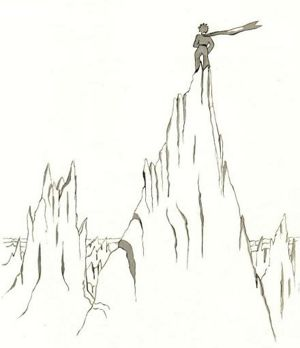

After that, the little prince climbed a high mountain. The only mountains he had ever known were the three volcanoes, which came up to his knees. And he used the extinct volcano as a footstool. "From a mountain as high as this one," he said to himself, "I shall be able to see the whole planet at one glance, and all the people…"
查看中文翻译
"Good morning -- Good morning -- Good morning," answered the echo.
查看中文翻译
But he saw nothing, save peaks of rock that were sharpened like needles.
查看中文翻译
"Who are you?" said the little prince.
查看中文翻译

"Who are you -- Who are you -- Who are you?" answered the echo.
查看中文翻译
"Good morning," he said courteously.
查看中文翻译
"I am all alone -- all alone -- all alone," answered the echo.
查看中文翻译
"Be my friends. I am all alone," he said.
查看中文翻译
"What a queer planet!" he thought. "It is altogether dry, and altogether pointed, and altogether harsh and forbidding. And the people have no imagination. They repeat whatever one says to them… On my planet I had a flower; she always was the first to speak…"
查看中文翻译